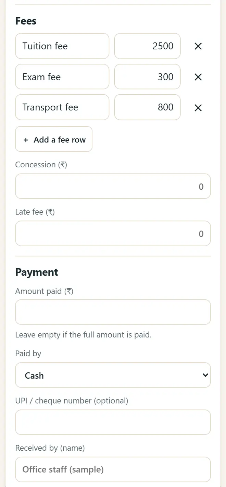

اسکول، کوچنگ اور ٹیوشن کے لیے فیس رسید کا فارمیٹ: مفت میں بنائیں
والدین رسید مانگتے ہیں، اور ٹیوٹر یا چھوٹے اسکول کو ہر ادائیگی کا حساب رکھنا ہوتا ہے۔ اس کے لیے چھپی ہوئی رسید بک ضروری نہیں۔ ایک چھوٹا فارم بھریں: ایپ فیس جوڑتی ہے، رقم لفظوں میں لکھتی ہے اور ایک A4 صفحے پر دفتر کی کاپی اور والدین کی کاپی چھاپ دیتی ہے۔
مختصر جواب
فیس رسید میکر کھولیں اور اپنے اسکول یا کلاس کا نام، طالب علم کا نام اور فیس لکھیں۔ ضرورت ہو تو “رعایت (₹)” یا “لیٹ فیس (₹)” بھریں اور “ادائیگی کا طریقہ” چنیں۔ “پرنٹ / PDF محفوظ کریں” دبائیں: A4 صفحے پر دو کاپیاں آتی ہیں، بیچ میں کاٹنے کی لکیر کے ساتھ۔
5 قدم میں فیس رسید
-
اپنے اسکول یا کلاس کی معلومات بھریں
فیس رسید میکر کھولیں۔ یہ نمونہ معلومات کے ساتھ کھلتی ہے۔ اسکول، کوچنگ یا ٹیوٹر کا نام، پتا اور فون نمبر لکھیں، اور لوگو ہو تو شامل کریں۔ یہ معلومات اگلی رسید کے لیے اسی آلے پر یاد رہتی ہے۔
-
رسید اور طالب علم کی معلومات بھریں
رسید نمبر اور تاریخ دیکھ لیں، اور لکھیں کہ فیس کس مہینے یا ٹرم کی ہے۔ طالب علم کا نام، جماعت یا بیچ، رول نمبر اور والدین کا نام لکھیں۔
-
فیس شامل کریں
ہر فیس کی رقم لکھیں، جیسے ٹیوشن فیس، امتحان فیس یا گاڑی کی فیس۔ سطر کا نام بدل سکتے ہیں، اور “فیس کی سطر شامل کریں” سے ایک اور سطر ملتی ہے۔ “رعایت (₹)” یا “لیٹ فیس (₹)” ہو تو بھریں۔ کل رقم خود نکل آتی ہے۔

فیس کی سطریں، رعایت، لیٹ فیس اور ادائیگی۔ -
ادائیگی درج کریں
اگر فیس کا صرف ایک حصہ جمع ہوا ہے، تو اسے “جمع کی گئی رقم (₹)” میں لکھیں؛ رسید بقایا دکھا دے گی۔ پوری رقم جمع ہوئی ہو تو اسے خالی چھوڑ دیں۔ “ادائیگی کا طریقہ” میں نقد، UPI، بینک ٹرانسفر، چیک یا کارڈ چنیں، اور UPI یا چیک نمبر اور رقم لینے والے کا نام لکھیں۔
-
پرنٹ کریں، محفوظ کریں اور اگلی رسید بنائیں
“پرنٹ / PDF محفوظ کریں” دبائیں اور A4 کاغذ چنیں، یا WhatsApp پر بھیجنے کے لیے Save as PDF۔ صفحے کو نقطوں والی لکیر پر کاٹیں، دونوں کاپیوں پر دستخط کریں، دفتر کی کاپی رکھیں اور دوسری والدین کو دیں۔ “نئی رسید” سے اگلے نمبر کی نئی رسید شروع ہوتی ہے۔

فیس رسید، پرنٹ کے لیے تیار۔
فیس رسید میں کیا کیا ہونا چاہیے
- اسکول یا کلاس کا نام اور پتا، رسید نمبر اور تاریخ۔
- طالب علم کا نام اور جماعت، اور فیس کس مہینے یا ٹرم کی ہے۔
- ہر فیس اور اس کی رقم، رعایت یا لیٹ فیس، جمع رقم ہندسوں اور لفظوں میں، اور بقایا ہو تو وہ بھی۔
- فیس کیسے دی گئی، کس نے لی، اور دستخط۔ ایپ رسید پر دستخط یا مہر نہیں لگاتی: چھپی کاپی پر دستخط کریں، اور مہر استعمال کرتے ہوں تو لگائیں۔
نئے مفت ٹولز اور ہندی میں AI کے اسباق پائیں
ہماری ای میل فہرست میں شامل ہوں: نئی مفت ایپس، نئی گائیڈز اور AI پر ہندی ویڈیو اسباق کی خبر آپ کو ملتی رہے گی۔ کوئی اسپام نہیں۔
صرف بالغوں (18+) کے لیے۔ آپ کبھی بھی اپنا نام ہٹوا سکتے ہیں۔
ہم یہ ٹولز کیوں تجویز کرتے ہیں
- سب کے لیے مفت: نہ اشتہار، نہ سائن اپ، نہ کوئی پیڈ پلان۔
- نجی: آپ کی فائلیں اور معلومات آپ کے اپنے آلے پر ہی رہتی ہیں۔
- فون، لیپ ٹاپ یا اسمارٹ بورڈ پر چلتے ہیں، اور ایک بار کھلنے کے بعد انٹرنیٹ کے بغیر بھی۔
- اردو اور ہندی سمیت 12 زبانوں میں۔
ویڈیو سے سیکھنا پسند ہے؟ ہمارے YouTube چینل پر AI اور مفت ٹولز کے ہندی اسباق دیکھیں۔
اکثر پوچھے جانے والے سوالات
فیس رسید کا فارمیٹ کیا ہوتا ہے؟
سب سے اوپر اسکول یا کلاس کا نام، رسید نمبر اور تاریخ، طالب علم کی معلومات، فیس اور رقم کا جدول، کل رقم، جمع رقم لفظوں میں، ادائیگی کا طریقہ، اور رقم لینے والے کے دستخط۔
کیا گھر پر ٹیوشن پڑھانے والے یا کوچنگ کلاس اسے استعمال کر سکتے ہیں؟
جی ہاں۔ اسکول کے نام کی جگہ اپنا نام یا اپنی کلاس کا نام لکھیں۔ یہ اسکول، کوچنگ کلاس، گھر کی ٹیوشن اور موسیقی یا شوق کی کلاس، سب کے کام آتی ہے۔
کیا یہ رسیدوں کا ریکارڈ رکھتی ہے؟
جی ہاں۔ جب آپ “رسید محفوظ کریں” دباتے ہیں یا پرنٹ کرتے ہیں، تو رسید اسی براؤزر میں، آپ کے آلے پر رکھ لی جاتی ہے۔ “CSV ڈاؤن لوڈ کریں” سے Excel یا Google Sheets کے لیے ایک فائل ملتی ہے، جس میں جمع ہوئی ساری فیس ہوتی ہے۔ اس فائل کو بیک اپ کے طور پر رکھیں، کیونکہ براؤزر کا ڈیٹا مٹانے پر محفوظ رسیدیں ہٹ جاتی ہیں۔
کیا یہاں بنی رسید مانی جاتی ہے؟
رسید آپ کا اپنا ریکارڈ ہے کہ آپ کو رقم ملی۔ معلومات صحیح ہونی چاہیے، اور اس پر آپ کے دستخط ضروری ہیں۔ اگر والدین کو رسید ٹیکس کی چھوٹ کے لیے یا دفتر میں دینے کے لیے چاہیے، تو وہ وہیں پوچھ لیں کہ کیا ضروری ہے۔ یہ گائیڈ ٹیکس کا مشورہ نہیں ہے۔
کیا رسید اردو یا انگریزی میں بنا سکتے ہیں؟
رسید ایپ کی زبان میں بنتی ہے، اور رقم لفظوں میں بھی اسی زبان میں آتی ہے۔ اگر آپ ایپ کسی اور زبان میں چلا رہے ہیں اور رسید انگریزی میں چاہیے، تو “رسید انگریزی میں بنائیں” پر نشان لگائیں۔
کام کی لگی؟
کسی دوست، ساتھیوں یا اپنے اسکول کے WhatsApp گروپ میں بھیجیں۔